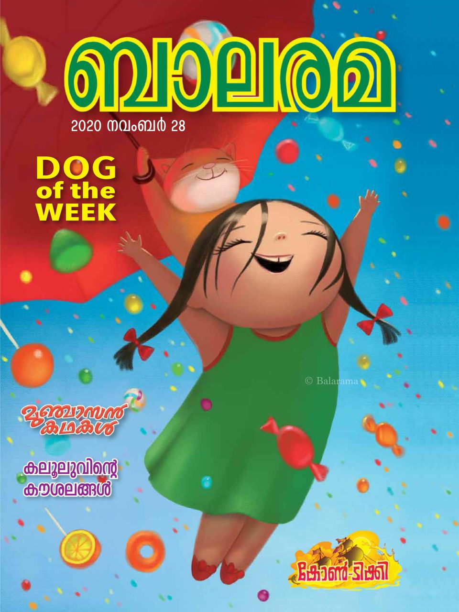

I am an ardent reader.I enjoy reading books and fantasise those occurences in the real world.
I often believe that it was my situations that led me to books.As a single child it was often
diffcult for me to be at home alone and the emotions I had to face on a daily basis made me more vulnerable
I started off with Children's magazine named Balarama.Balarama was a weekly magazine aimed at all the fridays.
Later I began reading newspapers,fictions and non fictions.Langauges also palys a huge role in my reading journey
I began reading malaylam and shifted to English as the time passed.

I am also a dancer ,classical dancer to be more specific.I began the journey of dance at the age of 4
Bharatnatyam was my initial dance form before gaining interest in Mohiniyattom.Classical dances are
always a visual treat but to understand the story conveyed through dance one has to know the regional stories or
mythologies.Kerala is often known for all the dance forms and music hence called God's own country.Mohiniyattom is
the state dance of kerala,it focusses mostly on the lasya and shringara bhava of dance.
I love clicking pictures.I mostly focus on nature photography and at times I click for my friends.I create reels
and videos on special occassions and post on social media .I am now focussiong on video editting.
More than everything that I disclosed to you in the above paragraphs,I find immense pleasure in travelling
It doesn't matter whether I am travelling to a long distance destination or a short ,I always enjoy the sceneries
around me.I also click pictures and record videos while travelling.My first lone trip was with my friends to Mysore.
It was wonderful as we began the journey early morning by train .We explored all the scenic places nearby and returned
a day after in the ame train.